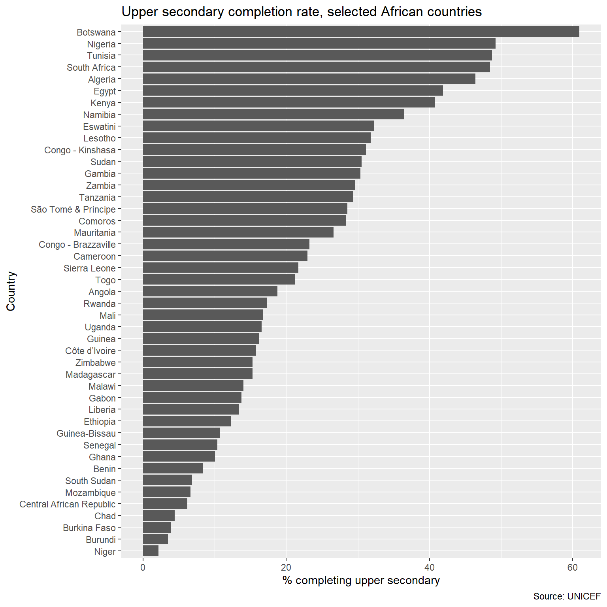

all_unicef_dataflows <- rsdmx::readSDMX(
providerId = "UNICEF",
resource = "dataflow"
) |>
dplyr::as_tibble()[rsdmx][INFO] Fetching 'https://sdmx.data.unicef.org/ws/public/sdmxapi/rest/dataflow/all/all/latest/' Let’s say we want to download upper secondary completion rates for all available African countries from the UNICEF data API. The first step is finding a dataflow related to education. Using the rsdmx package, we can get a table of all dataflows available from the UNICEF API:
all_unicef_dataflows <- rsdmx::readSDMX(
providerId = "UNICEF",
resource = "dataflow"
) |>
dplyr::as_tibble()[rsdmx][INFO] Fetching 'https://sdmx.data.unicef.org/ws/public/sdmxapi/rest/dataflow/all/all/latest/' dplyr::glimpse(all_unicef_dataflows)Rows: 167
Columns: 12
$ id <chr> "BRAZIL_CO", "BRAZIL_CO_SELO", "CAP2030", "CD2030"…
$ agencyID <chr> "BRAZIL_CO", "BRAZIL_CO", "CAP2030", "CD2030", "CD…
$ Name.en <chr> "Brazil Country Office", "Brazil SELO", "CAP 2030"…
$ version <chr> "1.0", "1.0", "1.0", "1.0", "1.0", "1.0", "1.0", "…
$ uri <chr> NA, NA, NA, NA, NA, NA, NA, NA, NA, NA, NA, NA, NA…
$ urn <chr> "urn:sdmx:org.sdmx.infomodel.datastructure.Dataflo…
$ isExternalReference <lgl> FALSE, FALSE, FALSE, FALSE, FALSE, FALSE, FALSE, F…
$ isFinal <lgl> FALSE, FALSE, FALSE, FALSE, FALSE, FALSE, FALSE, F…
$ validFrom <chr> NA, NA, NA, NA, NA, NA, NA, NA, NA, NA, NA, NA, NA…
$ validTo <chr> NA, NA, NA, NA, NA, NA, NA, NA, NA, NA, NA, NA, NA…
$ dsdRef <chr> "DSD_BRAZIL_CO", "DSD_BRAZIL_CO_SELO", "CAP2030", …
$ Description.en <chr> NA, NA, NA, "This dataset is used to support the d…Now let’s filter down to dataflows that mention education in their “Name.en” field:
all_unicef_dataflows |>
dplyr::filter(
stringr::str_detect(Name.en, stringr::fixed("education", ignore_case = TRUE))
) |>
dplyr::select(id, agencyID, Name.en, dsdRef)# A tibble: 5 × 4
id agencyID Name.en dsdRef
<chr> <chr> <chr> <chr>
1 EDU MENARO MENARO Education MENARO_…
2 UIS_EDU UNESCO UNESCO UIS Education UIS
3 EDU_NON_FINANCE UNESCO_ARCHIVE Education: Students and Teachers EDU_NON…
4 EDUCATION UNICEF Education EDUCATI…
5 EDUCATION_FLS UNICEF Education Foundational Learning Skills EDUCATI…Let’s say we want to explore the UNICEF dataflow with id equal to “EDUCATION”. We can see from the table above that that dataflow uses the data structure definition (DSD) “EDUCATION”. We can get more information on that DSD with:
unicef_education_dsd <- rsdmx::readSDMX(
providerId = "UNICEF",
resource = "datastructure",
resourceId = "EDUCATION"
)[rsdmx][INFO] Fetching 'https://sdmx.data.unicef.org/ws/public/sdmxapi/rest/datastructure/all/EDUCATION/latest/?references=children' When we make a data request below, we will need to know the DSD dimensions in order. To see the dimensions in order, along with the codelists used by each, we use:
dimensions_in_order <-
unicef_education_dsd@datastructures@datastructures[[1]]@Components@Dimensions
dimensions_and_codelists_in_order <- purrr::map2(
seq_along(dimensions_in_order),
dimensions_in_order,
~dplyr::tibble(order = .x, dimension = .y@conceptRef, codelist = .y@codelist)
) |> purrr::list_rbind()dimensions_and_codelists_in_order# A tibble: 7 × 3
order dimension codelist
<int> <chr> <chr>
1 1 REF_AREA CL_COUNTRY
2 2 UNICEF_INDICATOR CL_UNICEF_INDICATOR
3 3 SEX CL_SEX
4 4 EDUCATION_LEVEL CL_EDU_LEVEL
5 5 WEALTH_QUINTILE CL_WEALTH_QUINTILE
6 6 RESIDENCE CL_RESIDENCE
7 7 UNIT_MEASURE CL_UNIT_MEASURE Let’s look more closely at the UNICIEF_INDICATOR dimension, which uses the codelist with name “CL_UNICEF_INDICATOR”:
unicef_education_dsd_indicators_codelist <- purrr::keep(
unicef_education_dsd@codelists@codelists,
~.x@id == "CL_UNICEF_INDICATOR"
)[[1]]We can see information on the codes in the “CL_UNICEF_INDICATOR” codelist with:
indicator_code_labels <- purrr::map_chr(
unicef_education_dsd_indicators_codelist@Code,
~.x@label$en
)
head(indicator_code_labels)[1] "Child mortality"
[2] "Annual Rate of Reduction in Mortality Rate Age 10-19"
[3] "Annual rate of reduction in stillbirth rate (over previous 20 years)"
[4] "Annual rate of reduction in under-five mortality rate (over previous 20 years)"
[5] "Covid cases"
[6] "Covid cases share" It looks like we are getting all of the possible UNICEF indicators here, not just the ones related to education. Let’s filter down to just the indicators that mention “education”:
stringr::str_subset(
indicator_code_labels,
stringr::fixed("education", ignore_case = TRUE)
) [1] "Percentage of children aged 36-59 months attending an early childhood education programme"
[2] "government expenditure on education (% government budget)"
[3] "government expenditure on education (% GDP)"
[4] "Education"
[5] "Percentage of population aged 6-17 attending a formal educational institution (%)"
[6] "Completion rate for youth of upper secondary education school age"
[7] "Proportion of children and young people b) at the end of primary education achieving at least a minimum proficiency level in (ii) mathematics"
[8] "Proportion of children and young people c) at the end of lower secondary educationachieving at least a minimum proficiency level in (ii) mathematics"
[9] "Proportion of children and young people b) at the end of primary education achieving at least a minimum proficiency level in (i) reading"
[10] "Proportion of children and young people c) at the end of lower secondary education achieving at least a minimum proficiency level in (i) reading"
[11] "Average number of pupils per mathematics textbook in primary education"
[12] "Average number of pupils per reading textbook in primary education"
[13] "Early childhood education (Functional difficulties)"
[14] "Educational attainment of the population (aged 25 years and older)"
[15] "Pro-poor public social spending, education (%)"
[16] "Education National Targets"
[17] "Percentage of adolescents (aged 15-19 years) not in education, employment or training"
[18] "Pro-poor public social spending, education - Bottom quintile (%)"
[19] "Completion rate for youth of upper secondary education school age (Modeled)" The indicator “Completion rate for youth of upper secondary education school age” looks like what we want. Let’s see more information on that just to be sure:
upper_secondary_completion_indicator <- purrr::keep(
unicef_education_dsd_indicators_codelist@Code,
~.x@label$en == "Completion rate for youth of upper secondary education school age"
)[[1]]
upper_secondary_completion_indicator@description$en[1] "Percentage of a cohort of children or young people aged 3-5 years above the intended age for the last grade of upper secondary education who have completed upper secondary education"In order to request data for that indicator, we will need to know its ID value:
upper_secondary_completion_indicator@id[1] "ED_CR_L3"In this case, we want to limit to countries from Africa, so let’s look at the codelist “CL_COUNTRY”:
cl_country_codelist <- purrr::keep(
unicef_education_dsd@codelists@codelists,
~.x@id == "CL_COUNTRY"
)[[1]]
country_codes_and_labels <- purrr::map(
cl_country_codelist@Code,
~dplyr::tibble(code = .x@id, label = .x@label$en)
) |>
purrr::list_rbind()
country_codes_and_labels# A tibble: 371 × 2
code label
<chr> <chr>
1 ABW Aruba
2 AFG Afghanistan
3 AGO Angola
4 AIA Anguilla
5 ALB Albania
6 AND Andorra
7 ARE United Arab Emirates
8 ARG Argentina
9 ARM Armenia
10 ASM American Samoa
# ℹ 361 more rowsLet’s use the countrycode package to find countries in Africa:
country_codes_and_labels <- country_codes_and_labels |>
dplyr::mutate(
standard_label = countrycode::countryname(label, destination = "country.name.en")
) |>
dplyr::left_join(
countrycode::codelist |>
dplyr::select(continent, country.name.en),
by = c(standard_label = "country.name.en")
)Warning: There were 2 warnings in `dplyr::mutate()`.
The first warning was:
ℹ In argument: `standard_label = countrycode::countryname(label, destination =
"country.name.en")`.
Caused by warning:
! Some values were not matched unambiguously: Africa, Africa (African Union), African Union, Americas, Arab Maghreb Union (UMA), Arab States, Asia, Asia and the Pacific, Australia and New Zealand, Caribbean, Central Africa (African Union), Central America, Central and Southern Asia, Central Asia, Common Market for Eastern and Southern Africa (COMESA), Community of Sahel-Saharan States (CEN-SAD), EAPR (operational region), East African Community (EAC), East and Southern Africa, East Asia and Pacific, Eastern Africa, Eastern Africa (African Union), Eastern and South-Eastern Asia, Eastern and Southern Africa, Eastern Asia, Eastern Europe, Eastern Europe and Central Asia, Eastern Mediterranean, ECAR (operational region), Economic Community of Central African States (ECCAS), Economic Community of West African States (ECOWAS), ESAR (operational region), Europe, Europe and Central Asia, Europe and Northern America, Intergovernmental Authority on Development (IGAD), LACR (operational region), Landlocked developing countries (LLDCs), Latin America and the Caribbean, Least developed countries, Less Developed Regions, Low income food deficient countries, Melanasia, Melanesia, MENA (operational region), Micronesia, Middle Africa, Middle East and North Africa, North America, Northern Africa, Northern Africa (African Union), Northern Africa and Western Asia, Northern America, Northern Europe, Oceania, Oceania, excluding Australia and New Zealand, OECD, OECD Fragile Contexts, Polynesia, Regional Economic Communities, ROSA (operational region), SDG regions - Global, Small Island Developing States (SIDS), SOFI - Global, South-eastern Asia, South-Eastern Asia, South America, South Asia, Southeast Asia, Southern Africa, Southern Africa (African Union), Southern African Development Community (SADC), Southern Asia, Southern Europe, Sub-Saharan Africa, UN regions - Global, UNFPA regions, UNICEF operational regions, UNICEF Programme Regions - Global, UNICEF reporting regions - Global, WCAR (operational region), West and Central Africa, Western Africa, Western Africa (African Union), Western Asia, Western Europe, Western Pacific, World, World Bank (high income), World Bank (low income), World Bank (lower middle income), World Bank (upper middle income), World Bank income groups - Global, World bank World - Global, World Health Organisation regions - Global
ℹ Run `dplyr::last_dplyr_warnings()` to see the 1 remaining warning.Let’s see which labels couldn’t be matched unambiguously:
country_codes_and_labels |>
dplyr::filter(is.na(continent)) |>
dplyr::pull(label) [1] "Channel Islands"
[2] "SOFI - Global"
[3] "Low income food deficient countries"
[4] "Africa"
[5] "South America"
[6] "Oceania"
[7] "Western Africa"
[8] "Central America"
[9] "Eastern Africa"
[10] "Northern Africa"
[11] "Middle Africa"
[12] "Southern Africa"
[13] "Northern America"
[14] "Caribbean"
[15] "Eastern Asia"
[16] "Southern Asia"
[17] "South-eastern Asia"
[18] "Australia and New Zealand"
[19] "Asia"
[20] "Central Asia"
[21] "Western Asia"
[22] "Eastern Europe"
[23] "Northern Europe"
[24] "Western Europe"
[25] "Southern Europe"
[26] "Latin America and the Caribbean"
[27] "Melanasia"
[28] "Oceania, excluding Australia and New Zealand"
[29] "Micronesia"
[30] "Polynesia"
[31] "UN regions - Global"
[32] "Less Developed Regions"
[33] "Asia and the Pacific"
[34] "Arab States"
[35] "Eastern Europe and Central Asia"
[36] "East and Southern Africa"
[37] "Latin America and the Caribbean"
[38] "UNFPA regions"
[39] "West and Central Africa"
[40] "East Asia and Pacific"
[41] "East Asia and Pacific"
[42] "Europe and Central Asia"
[43] "Europe and Central Asia"
[44] "Eastern Europe and Central Asia"
[45] "Eastern and Southern Africa"
[46] "Eastern and Southern Africa"
[47] "Latin America and the Caribbean"
[48] "Latin America and the Caribbean"
[49] "Middle East and North Africa"
[50] "Middle East and North Africa"
[51] "North America"
[52] "UNICEF Programme Regions - Global"
[53] "UNICEF reporting regions - Global"
[54] "South Asia"
[55] "South Asia"
[56] "Sub-Saharan Africa"
[57] "West and Central Africa"
[58] "West and Central Africa"
[59] "Western Europe"
[60] "Australia and New Zealand"
[61] "Caribbean"
[62] "Central America"
[63] "Central Asia"
[64] "Central and Southern Asia"
[65] "Eastern Africa"
[66] "Eastern Asia"
[67] "Eastern and South-Eastern Asia"
[68] "Eastern Europe"
[69] "Europe"
[70] "Europe and Northern America"
[71] "Latin America and the Caribbean"
[72] "Least developed countries"
[73] "Landlocked developing countries (LLDCs)"
[74] "Melanesia"
[75] "Middle Africa"
[76] "Northern Africa"
[77] "North America"
[78] "Oceania"
[79] "Oceania, excluding Australia and New Zealand"
[80] "Polynesia"
[81] "SDG regions - Global"
[82] "Small Island Developing States (SIDS)"
[83] "South America"
[84] "Southern Asia"
[85] "South-Eastern Asia"
[86] "Southern Africa"
[87] "Sub-Saharan Africa"
[88] "Western Africa"
[89] "Western Asia"
[90] "Northern Africa and Western Asia"
[91] "East Asia and Pacific"
[92] "World Bank (high income)"
[93] "World Bank income groups - Global"
[94] "Latin America and the Caribbean"
[95] "World Bank (low income)"
[96] "World Bank (lower middle income)"
[97] "Middle East and North Africa"
[98] "North America"
[99] "World bank World - Global"
[100] "South Asia"
[101] "Sub-Saharan Africa"
[102] "World Bank (upper middle income)"
[103] "Africa"
[104] "Americas"
[105] "Eastern Mediterranean"
[106] "Europe"
[107] "World Health Organisation regions - Global"
[108] "Southeast Asia"
[109] "Western Pacific"
[110] "World"
[111] "Kosovo (UNSCR 1244)"
[112] "African Union"
[113] "Africa (African Union)"
[114] "Central Africa (African Union)"
[115] "Eastern Africa (African Union)"
[116] "Northern Africa (African Union)"
[117] "Southern Africa (African Union)"
[118] "Western Africa (African Union)"
[119] "OECD"
[120] "OECD Fragile Contexts"
[121] "UNICEF operational regions"
[122] "EAPR (operational region)"
[123] "ECAR (operational region)"
[124] "ESAR (operational region)"
[125] "LACR (operational region)"
[126] "MENA (operational region)"
[127] "ROSA (operational region)"
[128] "WCAR (operational region)"
[129] "Regional Economic Communities"
[130] "Arab Maghreb Union (UMA)"
[131] "Common Market for Eastern and Southern Africa (COMESA)"
[132] "Community of Sahel-Saharan States (CEN-SAD)"
[133] "East African Community (EAC)"
[134] "Economic Community of Central African States (ECCAS)"
[135] "Economic Community of West African States (ECOWAS)"
[136] "Intergovernmental Authority on Development (IGAD)"
[137] "Southern African Development Community (SADC)" Looks like most of these are supra- or sub-national regions, so it makes sense that we couldn’t match them to a single country name. Now we’re ready to filter down to countries in Africa so we can get the corresponding codes for our API request:
african_country_codes <- country_codes_and_labels |>
dplyr::filter(continent == "Africa")
african_country_codes# A tibble: 57 × 4
code label standard_label continent
<chr> <chr> <chr> <chr>
1 AGO Angola Angola Africa
2 BDI Burundi Burundi Africa
3 BEN Benin Benin Africa
4 BFA Burkina Faso Burkina Faso Africa
5 BWA Botswana Botswana Africa
6 CAF Central African Republic Central African Republic Africa
7 CIV Côte d'Ivoire Côte d’Ivoire Africa
8 CMR Cameroon Cameroon Africa
9 COD Democratic Republic of the Congo Congo - Kinshasa Africa
10 COG Congo Congo - Brazzaville Africa
# ℹ 47 more rowsWe could filter our request on additional dimensions, but for the sake of simplicity let’s filter only to our target indicator and countries. Here’s how to make that request:
african_education_data <- rsdmx::readSDMX(
providerId = "UNICEF",
resource = "data",
flowRef = "EDUCATION",
key = list(african_country_codes$code, "ED_CR_L3")
)[rsdmx][INFO] Fetching 'https://sdmx.data.unicef.org/ws/public/sdmxapi/rest/data/EDUCATION/AGO+BDI+BEN+BFA+BWA+CAF+CIV+CMR+COD+COG+COM+CPV+DJI+DZA+EGY+ERI+ETH+GAB+GHA+GIN+GMB+GNB+GNQ+KEN+LBR+LBY+LSO+MAR+MDG+MLI+MOZ+MRT+MUS+MWI+MYT+NAM+NER+NGA+REU+RWA+SDN+SEN+SHN+SLE+SOM+SSD+STP+SWZ+SYC+TCD+TGO+TUN+TZA+UGA+ZAF+ZMB+ZWE.ED_CR_L3/all/' Remember from above that reference area and indicator were the first two dimensions in the DSD, which is why we can list our restrictions for just those two dimensions in our key argument. The list passed to key will be assumed to correspond to the first “n” dimensions (where n is the length of the list).
To work with the data in R, we need to transform them from XML to an R data.frame or tibble:
african_education_data_as_list <- XML::xmlToList(african_education_data@xmlObj)african_education_data_points <- african_education_data_as_list$DataSet[
names(african_education_data_as_list$DataSet) == "Series"
]
african_education_data_as_tibble <- purrr::map(
african_education_data_points,
function(datapoint) {
obs_data <- purrr::map(datapoint$Obs, ~.x)
dimension_data <- purrr::map(datapoint$.attrs, ~.x)
dplyr::bind_cols(dimension_data, obs_data)
}
) |>
purrr::list_rbind()Now let’s filter to only totals by sex, wealth quintile, and residence, and select and rename only the columns we want:
african_education_data_cleaned <- african_education_data_as_tibble |>
dplyr::filter(
dplyr::if_all(c(SEX, WEALTH_QUINTILE, RESIDENCE), ~.x == "_T")
) |>
dplyr::left_join(
african_country_codes |>
dplyr::select(REF_AREA = code, country_name = standard_label),
by = "REF_AREA"
) |>
dplyr::select(
country_name,
year = TIME_PERIOD,
percent_completing_secondary = OBS_VALUE,
data_source = DATA_SOURCE
) |>
dplyr::mutate(
percent_completing_secondary = as.numeric(percent_completing_secondary)
)Now we’re ready to plot our data:
african_education_data_cleaned |>
ggplot2::ggplot(
ggplot2::aes(
x = forcats::fct_reorder(country_name, percent_completing_secondary),
y = percent_completing_secondary
)
) +
ggplot2::geom_col() +
ggplot2::coord_flip() +
ggplot2::labs(
title = "Upper secondary completion rate, selected African countries",
y = "% completing upper secondary",
x = "Country",
caption = "Source: UNICEF"
)